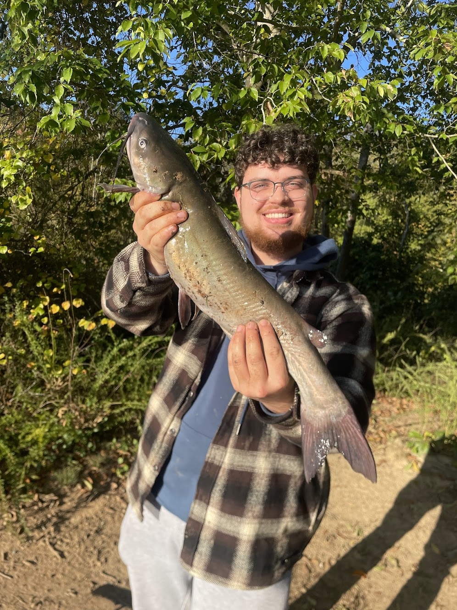
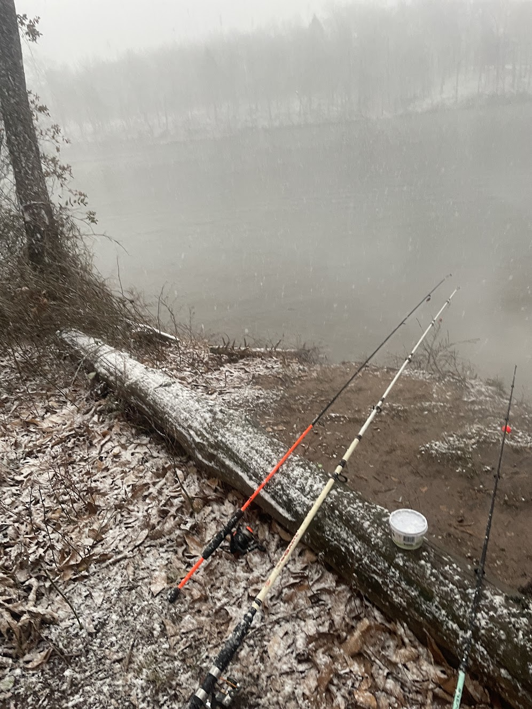

Bull Run Fishing Guides

Welcome to Bull Run Fishing Guides, where we offer fishing trips for anglers of all levels.
About the Boat
Model: Custom Center Console
Length: 19 feet
Capacity: Up to 3 people
Engine: 90HP Suzuki
The boat is built for a smooth and stable experience, perfect for exploring local waters.
Included in Your Trip
Rods, Reels & Tackle – All gear is provided.
Live Bait & Lures – No extra cost for bait.
Fishing License – Covered for everyone onboard.
Whether you're after bass, catfish, or sunnies, everything you need is included.
My name is Isaac, and I have experience fishing the Bull Run River and am offering my services to help you get on fish and learn what methods work best for you! I will help you catch monster cats and record bass, and for the right price, even filet your catch for you. Explore my site and contact me to see availability and pricing!
What's Biting?
What fish species we will target
Spring
As the waters warm up, fish become more active! FYI:
- – Best in early mornings & late afternoons.
- Largemouth Bass – Prime time for spawning behavior.
- Crappie – Best near brush piles and protecting spawn.
Availability: Full-day trips are more frequent in spring, allowing for extended time on the water.
Summer
Peak season for aggressive feeding! Expect:
- Catfish – Best after sunset or in deep waters.
- Smallmouth Bass – Chase more aggressively, out slightly deeper.
- Sunfish & Bluegill – Great for beginners. Bite all summer long
Availability: More full-day trips in summer, especially early mornings and dusk for better bites.
Fall
Fish start feeding aggressively before winter. Targets include:
- Catfish – Cooler temps bring them shallow. And get greedy before winter
- Largemouth Bass – chase schools, perfect for topwater and lures.
Availability: Fewer full-day trips, but excellent half-day morning excursions.

Book a Tour
Select your guide package
4-Hour Half-day "The Blitz"
- Rods Included
- Icebox
- Jigging and Trolling mini workshop upon request
- Good deal
- Mostly Targeting Bass
- Perfect for catching the Morning or Evening bite
done_outline
8-Hour Full-day "The Chase"
- Rods Included
- Icebox
- Keep what you catch + free filet service
- Great deal
- Plenty of time to catch Catfish
done_outline
10-Hour Full-day "The Haul"
- Rods Included
- Icebox
- Keep what you catch + Free filet service
- Best deal
- Perfect for Birthdays, Holidays
-
Most time on the water with greatest variety of spots showcased
- Most time for multi-species angling
done_outline